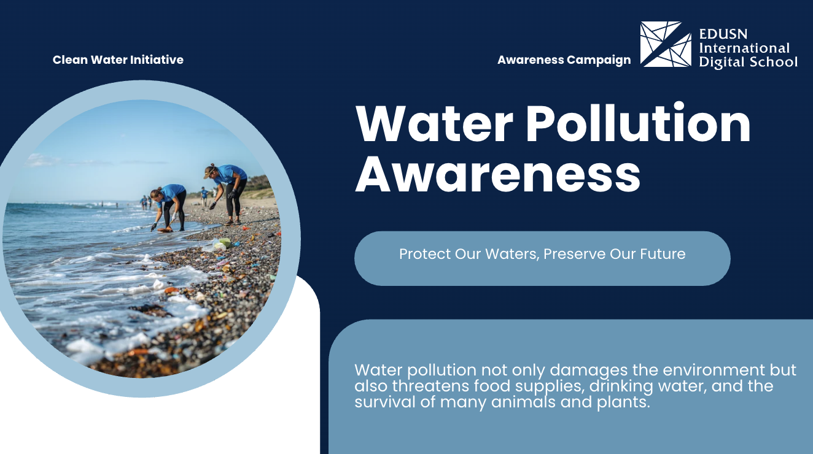
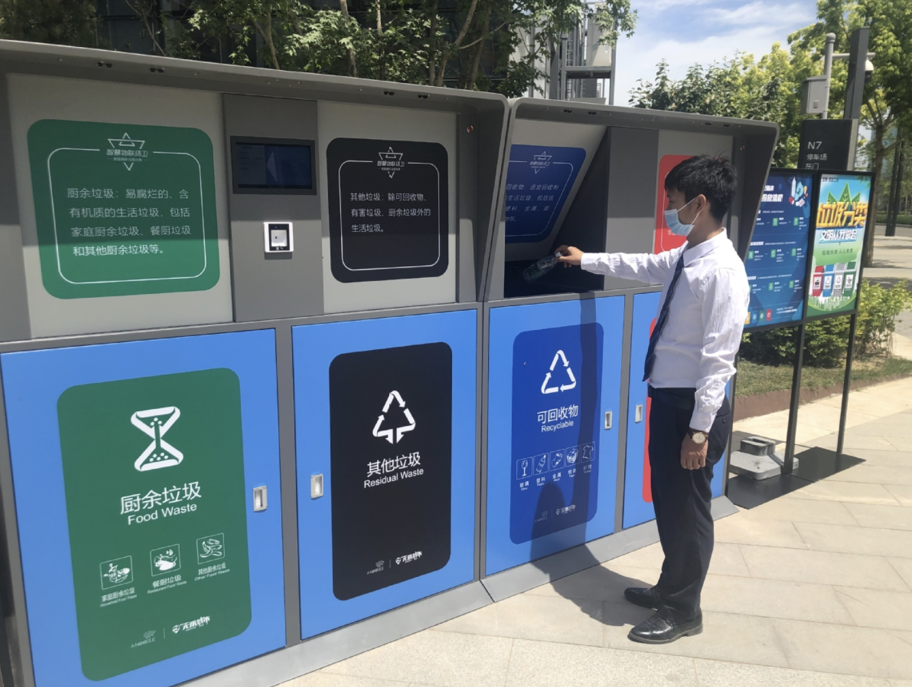
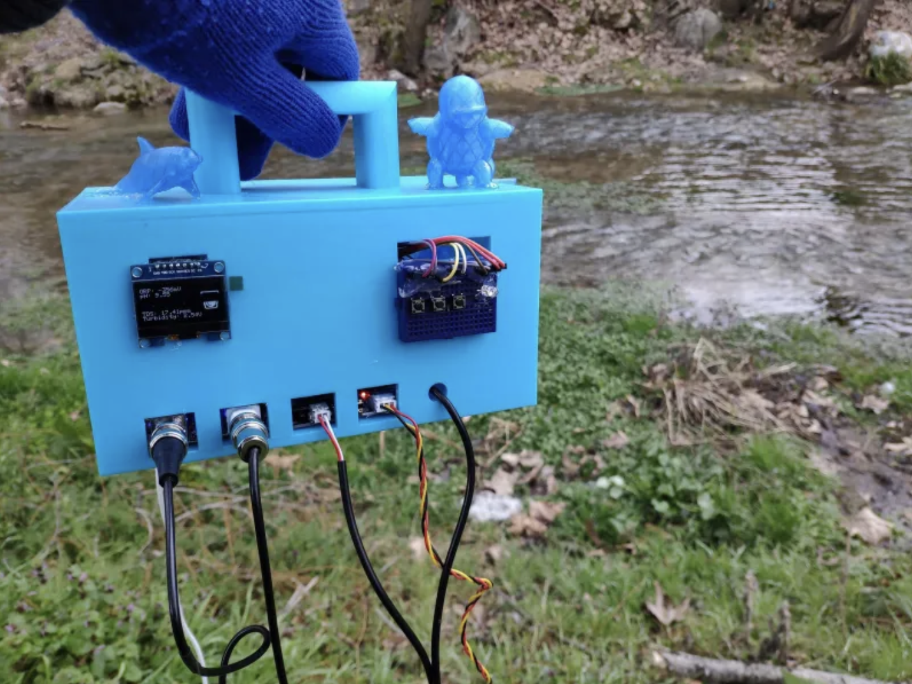

Water pollution can harm people, wildlife, and the environment. Simple community actions and smart technology can help reduce pollution in rivers, oceans, and waterways. By working together, we can protect clean water resources and create a healthier environment for everyone. Protecting water resources requires both responsible daily actions and innovative smart solutions. Communities can reduce water pollution through proper waste management, environmental awareness, and modern technology that helps monitor and improve water quality.

Do not throw plastic, food waste, or chemicals into rivers, lakes, or drains. Always dispose of waste properly.

Switching to reusable bags and bottles prevents plastic from eventually reaching the ocean.

Educate communities about water pollution and encourage clean habits through campaigns and activities.

Use smart bins to improve waste collection and ensure rubbish is disposed of properly.

Monitor rivers and lakes using sensors to detect pollution early and protect water sources.